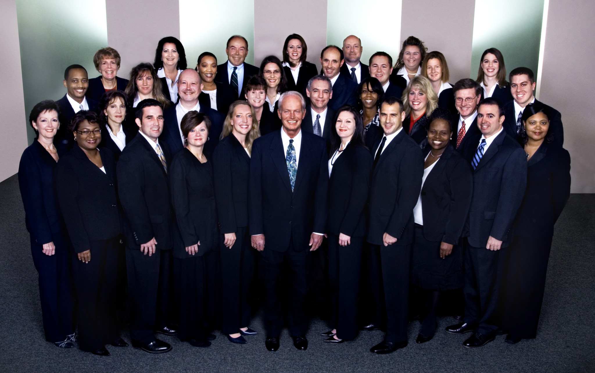

DEDICATED TO LONG-TERM GROWTH AND PARTNERSHIP
Founded in 1993, Symbex has evolved from a traditional acquisition firm into a long-term partner for entrepreneurs and operators. We invest in companies with strong fundamentals and untapped potential, then work side by side with leadership to scale operations, improve performance, and build lasting value.
Our approach blends the discipline of private equity with the mindset of a dedicated operator. We don’t just provide capital—we bring strategic guidance, operational support, and a deep respect for the legacy and culture of the businesses we serve.
The name Symbex combines two core ideas: SYMBiosis and EXcellence. True to that origin, we believe the best outcomes come from interdependent, win-win relationships—between businesses and their customers, their teams, their suppliers, and their investors. We foster trust, alignment, and long-term thinking in everything we do.